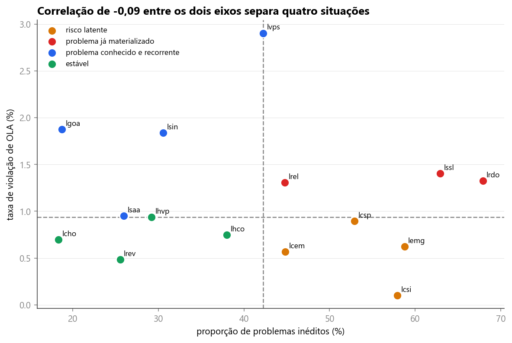

<style>
/* ═══════════════════════════════════════════════════════════════════════════
   VAGA 3 do deck da banca ao vivo · onde a operação age
   Quatro análises candidatas para a mesma posição (data-slide="8"), que o dono
   do projeto percorre com a seta para baixo:

     a  volume e perda de prazo por nível de atendimento   (HTML puro)
     b  o código de fechamento Outro no volume e nas perdas (HTML puro)
     c  acerto da projeção do KPI por data de corte         (proj_meta.png)
     d  perda de prazo e problema inédito por produto        (saude_quadrantes.png)

   Todo o CSS aqui é prefixado por .v3a, .v3b, .v3c ou .v3d, para não vazar
   para os outros blocos. As classes compartilhadas (.slide .light .mesh
   .grid-bg .hd .body .ft .eb .tt .cartao .ic .num, .rv .rv3 .mask, a variável
   --d e os keyframes corre e tick) vêm de _estilo.css e não são redefinidas.
   Nenhum keyframe novo é declarado: keyframe é global no deck montado.
   ═══════════════════════════════════════════════════════════════════════════ */

/* ── o que os quatro compartilham ─────────────────────────────────────────
   rodapé mais alto que o padrão: com 44px o conteúdo encostava no marcador de
   quem apresenta, que o _montar.py injeta na primeira vaga do rodapé */
.v3a .body,.v3b .body,.v3c .body,.v3d .body{padding:20px 64px 74px}
.v3a .tt,.v3b .tt{font-size:42px;letter-spacing:-1.5px;line-height:1.06;max-width:1400px}
.v3c .tt,.v3d .tt{font-size:40px;letter-spacing:-1.4px;line-height:1.06;max-width:1400px}
/* linha de título com nowrap: cada máscara revela uma linha, e uma máscara que
   quebra em duas linhas revela as duas de uma vez, perdendo o escalonamento */
.v3a .tt .mask>span,.v3b .tt .mask>span,
.v3c .tt .mask>span,.v3d .tt .mask>span{white-space:nowrap}
.v3b .sub,.v3c .sub,.v3d .sub{font-size:17px;line-height:1.45;color:var(--tx);margin-top:12px;
  max-width:1240px}
.v3b .sub b,.v3c .sub b,.v3d .sub b{color:var(--head);font-weight:700}

/* faixa de fecho ancorada no pé do corpo: o respiro sobra entre o objeto
   dominante e a faixa, no nível do slide, e não dentro de cartão nenhum */
.v3a .fecho,.v3b .fecho{margin-top:auto;border-top:1px solid var(--line);padding-top:22px;
  display:flex;align-items:flex-start;gap:18px}
.v3a .fecho .ic,.v3b .fecho .ic{width:26px;height:26px;color:var(--accent);flex-shrink:0;
  margin-top:2px}
.v3a .fecho p,.v3b .fecho p{font-size:16.5px;line-height:1.5;color:var(--tx);max-width:1240px}
.v3a .fecho p b,.v3b .fecho p b{color:var(--head);font-weight:700}
.v3a .fecho .rl{display:inline-block;font-size:11.5px;font-weight:700;letter-spacing:1.6px;
  text-transform:uppercase;color:var(--warn);background:var(--warn-l);border-radius:6px;
  padding:4px 10px;margin-right:12px;vertical-align:2px}

/* ═══════════════ a · POR NÍVEL DE ATENDIMENTO ═══════════════
   Duas famílias de barra lado a lado. À esquerda o volume, quase idêntico nos
   dois grupos; à direita a taxa de perda de prazo, onde a diferença aparece. A
   terceira linha é a base inteira, como régua. A ressalva da carteira fecha o
   slide, e é ela que transforma o achado em "onde olhar".                  */
.v3a .quadro{margin-top:30px;height:448px;flex:0 0 auto;padding:26px 36px 24px;
  display:flex;flex-direction:column}
.v3a .cab{display:flex;align-items:flex-end;font-size:12px;font-weight:700;letter-spacing:1.7px;
  text-transform:uppercase;color:var(--tx2);padding-bottom:6px}
.v3a .cab .c1{width:232px;flex-shrink:0}
.v3a .cab .c2{width:372px;flex-shrink:0}
.v3a .cab .c3{flex:1;min-width:0}

.v3a .linhas{flex:1;display:flex;flex-direction:column;min-height:0}
.v3a .lin{flex:1;display:flex;align-items:center;border-top:1px solid var(--line)}
.v3a .lin.base{border-top:1px dashed #C9D3E2}

.v3a .gp{width:232px;flex-shrink:0}
.v3a .gp b{display:block;font-size:27px;font-weight:800;letter-spacing:-.8px;color:var(--head);
  line-height:1}
.v3a .gp i{display:block;font-style:normal;font-size:12px;font-weight:700;letter-spacing:1.1px;
  text-transform:uppercase;color:var(--tx2);margin-top:7px}
.v3a .lin.base .gp b{font-size:20px;color:var(--tx)}

.v3a .cel{min-width:0}
.v3a .cel.vol{width:372px;flex-shrink:0}
.v3a .cel.txa{flex:1}
.v3a .par{display:flex;align-items:center;gap:16px}
.v3a .tr{height:26px;border-radius:8px;background:#EDF1F7;flex-shrink:0}
.v3a .cel.vol .tr{width:320px}
.v3a .cel.txa .tr{width:640px}
.v3a .bar{display:block;height:100%;width:var(--w);border-radius:8px;background:var(--accent2);
  transform:scaleX(0);transform-origin:left}
.is-active.v3a .bar{animation:corre .95s var(--out) forwards;animation-delay:var(--d,0ms)}
.v3a .bar.boa{background:var(--good)}
.v3a .bar.ruim{background:var(--bad)}
.v3a .bar.neutra{background:#94A3B8}
.v3a .vl{font-size:22px;font-weight:800;letter-spacing:-.6px;color:var(--head);
  font-variant-numeric:tabular-nums;white-space:nowrap}
.v3a .vl.boa{color:var(--good)}
.v3a .vl.ruim{color:var(--bad)}
.v3a .lin.base .vl{font-size:18px;color:var(--tx2);font-weight:700}
.v3a .lg{font-size:14.5px;color:var(--tx2);margin-top:9px}
.v3a .lg b{color:var(--tx);font-weight:700}
.v3a .lin.base .lg{font-size:13.5px}

/* ═══════════════ b · O CÓDIGO DE FECHAMENTO OUTRO ═══════════════
   Três linhas empilhadas com fio de 1px, no mesmo trilho de 100%: o código
   ocupa uma fatia pequena do volume e uma fatia grande das perdas, e a
   terceira linha põe a taxa dele ao lado da média do período.              */
.v3b .quadro{margin-top:28px;height:452px;flex:0 0 auto;padding:26px 36px 24px;
  display:flex;flex-direction:column}
.v3b .fx{flex:1;display:flex;align-items:center;gap:34px;min-height:0}
.v3b .fx+.fx{border-top:1px solid var(--line)}
.v3b .mm{flex:1;min-width:0}
.v3b .kk{font-size:12px;font-weight:700;letter-spacing:1.7px;text-transform:uppercase;
  color:var(--tx2)}
.v3b .tr{position:relative;height:46px;border-radius:10px;background:#EDF1F7;margin-top:10px}
.v3b .bar{position:absolute;left:0;top:0;height:100%;width:var(--w);border-radius:10px;
  transform:scaleX(0);transform-origin:left}
.is-active.v3b .bar{animation:corre 1s var(--out) forwards;animation-delay:var(--d,0ms)}
.v3b .bar.cinza{background:#8E9BAD}
.v3b .bar.vermelha{background:var(--bad)}
.v3b .pin{position:absolute;top:50%;transform:translateY(-50%);left:var(--w);margin-left:16px;
  font-size:20px;font-weight:800;letter-spacing:-.5px;color:var(--head);
  font-variant-numeric:tabular-nums;white-space:nowrap}
.v3b .lg{font-size:14.5px;color:var(--tx2);margin-top:10px}
.v3b .lg b{color:var(--tx);font-weight:700}
.v3b .vv{width:224px;flex-shrink:0;text-align:right}
.v3b .vv .v{font-size:54px;font-weight:900;letter-spacing:-2.4px;line-height:.95;
  font-variant-numeric:tabular-nums;color:var(--head)}
.v3b .vv .v.ruim{color:var(--bad)}
.v3b .vv .k{font-size:13.5px;line-height:1.35;color:var(--tx2);margin-top:8px}

/* a terceira linha: taxa do código contra a média, dois trilhos finos */
.v3b .duo{margin-top:10px}
.v3b .duo .un{display:flex;align-items:center;gap:14px}
.v3b .duo .un+.un{margin-top:14px}
.v3b .duo .nm{width:186px;flex-shrink:0;font-size:14.5px;font-weight:700;color:var(--head)}
.v3b .duo .nm.fraca{color:var(--tx2);font-weight:600}
.v3b .duo .tr{height:26px;border-radius:7px;margin-top:0;width:600px;flex-shrink:0}
.v3b .duo .bar{border-radius:7px}
.v3b .duo .num2{font-size:17px;font-weight:800;letter-spacing:-.4px;
  font-variant-numeric:tabular-nums;color:var(--bad)}
.v3b .duo .num2.fraca{color:var(--tx2);font-weight:700}

/* ═══════════════ c · ACERTO DA PROJEÇÃO DO KPI ═══════════════
   A figura do backtest ocupa a largura, e a coluna da direita traz o
   resultado das duas prioridades com o mesmo tratamento, inclusive o do P3,
   que reprova em três das cinco datas.                                     */
.v3c .cena{display:flex;gap:30px;margin-top:26px;height:500px;flex:0 0 auto;align-items:stretch}
.v3c .figc{flex:1;min-width:0;padding:16px 20px 12px;display:flex;flex-direction:column}
.v3c .figc .fb{flex:1;min-height:0;display:flex;align-items:center;justify-content:center}
.v3c .figc img{max-width:100%;max-height:100%;display:block}
.v3c .figc .ff{font-size:13px;line-height:1.4;color:var(--tx2);text-align:center;margin-top:8px}
.v3c .col{width:320px;flex-shrink:0;padding:24px 26px;display:flex;flex-direction:column}
.v3c .sec{flex:1;display:flex;flex-direction:column;justify-content:center;min-height:0}
.v3c .sec+.sec{border-top:1px solid var(--line)}
.v3c .sec .pk{display:inline-flex;align-items:center;justify-content:center;width:44px;height:26px;
  border-radius:8px;font-size:13px;font-weight:900;letter-spacing:-.2px}
.v3c .sec.ok .pk{background:var(--good-l);color:var(--good)}
.v3c .sec.meio .pk{background:var(--warn-l);color:var(--warn)}
.v3c .sec.err .pk{background:#EEF2F7;color:var(--tx2)}
.v3c .sec .v{font-size:40px;font-weight:900;letter-spacing:-1.8px;line-height:1;margin-top:12px;
  font-variant-numeric:tabular-nums}
.v3c .sec.ok .v{color:var(--good)}
.v3c .sec.meio .v{color:var(--warn)}
.v3c .sec.err .v{color:var(--head)}
.v3c .sec .l{font-size:14px;line-height:1.4;color:var(--tx);margin-top:10px}
.v3c .sec .l b{color:var(--head);font-weight:700}

/* ═══════════════ d · SAÚDE POR PRODUTO ═══════════════
   Dispersão à esquerda, e à direita as quatro situações que os dois eixos
   separam, cada uma com o quadrante desenhado do lado, na cor do gráfico. */
.v3d .cena{display:flex;gap:30px;margin-top:26px;height:578px;flex:0 0 auto;align-items:stretch}
.v3d .figc{width:822px;flex-shrink:0;padding:16px 20px 12px;display:flex;flex-direction:column}
.v3d .figc .fb{flex:1;min-height:0;display:flex;align-items:center;justify-content:center}
.v3d .figc img{max-width:100%;max-height:100%;display:block}
.v3d .figc .ff{font-size:13px;line-height:1.45;color:var(--tx2);text-align:center;margin-top:8px}
.v3d .col{flex:1;min-width:0;padding:26px 30px 24px;display:flex;flex-direction:column}
.v3d .kk{font-size:12px;font-weight:700;letter-spacing:1.7px;text-transform:uppercase;
  color:var(--tx2);flex-shrink:0}
.v3d .qs{flex:1;display:flex;flex-direction:column;margin-top:12px;min-height:0}
.v3d .q{flex:1;display:flex;align-items:center;gap:16px;border-top:1px solid var(--line)}
.v3d .q i.pt{width:12px;height:12px;border-radius:50%;flex-shrink:0;display:block}
.v3d .q .tx{flex:1;min-width:0}
.v3d .q .t{font-size:18.5px;font-weight:800;letter-spacing:-.35px;color:var(--head)}
.v3d .q .c{font-size:13.5px;color:var(--tx2);margin-top:4px}
.v3d .q .qd{width:32px;height:32px;flex-shrink:0;display:block}
.v3d .nota{flex-shrink:0;border-top:1px solid var(--line);padding-top:18px;display:flex;
  align-items:flex-start;gap:16px}
.v3d .nota .g{flex-shrink:0;text-align:center;width:72px}
.v3d .nota .g b{display:block;font-size:38px;font-weight:900;letter-spacing:-1.6px;line-height:1;
  color:var(--bad);font-variant-numeric:tabular-nums}
.v3d .nota .g i{display:block;font-style:normal;font-size:11.5px;font-weight:700;letter-spacing:1.4px;
  text-transform:uppercase;color:var(--tx2);margin-top:6px}
.v3d .nota p{font-size:15px;line-height:1.5;color:var(--tx)}
.v3d .nota p b{color:var(--head);font-weight:700}
</style>

<!-- ═══════════ VAGA 3 · candidata A · nível de atendimento ═══════════ -->
<section class="slide light v3a" data-slide="8" data-var="a" data-quem="hygor">
  <div class="mesh"></div><div class="grid-bg"></div>
  <div class="hd">
    <div class="bi"><svg viewBox="0 0 28 28" fill="none"><path d="M6 22L12 14L16 17L22 8" stroke="#fff" stroke-width="2.2" stroke-linecap="round" stroke-linejoin="round"/><circle cx="22" cy="8" r="3" fill="none" stroke="#3B82F6" stroke-width="1.5"/><circle cx="22" cy="8" r="1.2" fill="#3B82F6"/></svg></div>
    <div class="bn">Cronos</div><span class="bt">BANCA FINAL · 15/09/2026</span>
    <div class="tag">Contagem direta, sem modelo</div>
  </div>
  <div class="body">
    <span class="eb"><span class="rv" style="--d:220ms">Onde a operação age</span></span>
    <h1 class="tt">
      <span class="mask" style="--d:320ms"><span>Dois grupos atendem o mesmo volume, e a taxa de</span></span>
      <span class="mask" style="--d:430ms"><span>perda de prazo de um deles é <span class="bd">11,8 vezes</span> a do outro.</span></span>
    </h1>

    <div class="cartao quadro rv3" style="--d:660ms">
      <div class="cab">
        <span class="c1"></span>
        <span class="c2">Volume na base elegível</span>
        <span class="c3">Taxa de perda de prazo</span>
      </div>
      <div class="linhas">
        <div class="lin">
          <div class="gp rv" style="--d:840ms"><b>Team14</b><i>N1 · triagem automática</i></div>
          <div class="cel vol">
            <div class="par"><span class="tr"><i class="bar" style="--w:35.1%;--d:1000ms"></i></span><b class="vl num">35,1%</b></div>
            <div class="lg"><b class="num">8.973</b> incidentes elegíveis</div>
          </div>
          <div class="cel txa">
            <div class="par"><span class="tr"><i class="bar boa" style="--w:7.33%;--d:1140ms"></i></span><b class="vl boa num"><span class="ct" data-to="0,11" data-dec="2" data-delay="1180">0,11</span>%</b></div>
            <div class="lg"><b class="num">10</b> perdas de prazo</div>
          </div>
        </div>
        <div class="lin">
          <div class="gp rv" style="--d:920ms"><b>Team11</b><i>N2 · atendimento especializado</i></div>
          <div class="cel vol">
            <div class="par"><span class="tr"><i class="bar" style="--w:34%;--d:1080ms"></i></span><b class="vl num">34,0%</b></div>
            <div class="lg"><b class="num">8.702</b> incidentes elegíveis</div>
          </div>
          <div class="cel txa">
            <div class="par"><span class="tr"><i class="bar ruim" style="--w:87.33%;--d:1220ms"></i></span><b class="vl ruim num"><span class="ct" data-to="1,31" data-dec="2" data-delay="1260">1,31</span>%</b></div>
            <div class="lg"><b class="num">114</b> perdas de prazo</div>
          </div>
        </div>
        <div class="lin base">
          <div class="gp rv" style="--d:1000ms"><b>Base elegível ao KPI</b><i>Régua de comparação</i></div>
          <div class="cel vol">
            <div class="par"><span class="tr"><i class="bar neutra" style="--w:100%;--d:1360ms"></i></span><b class="vl num">100%</b></div>
            <div class="lg"><b class="num">25.600</b> incidentes elegíveis</div>
          </div>
          <div class="cel txa">
            <div class="par"><span class="tr"><i class="bar neutra" style="--w:64.67%;--d:1420ms"></i></span><b class="vl num">0,97%</b></div>
            <div class="lg"><b class="num">248</b> perdas de prazo</div>
          </div>
        </div>
      </div>
    </div>

    <div class="fecho rv" style="--d:1620ms">
      <svg class="ic" viewBox="0 0 24 24"><path d="M12 3.6 3.4 7.1v5.2c0 4 3.6 7 8.6 8.1 5-1.1 8.6-4.1 8.6-8.1V7.1z"/><path d="M12 8.6v4"/><path d="M12 15.6h.01"/></svg>
      <p><span class="rl">Ressalva</span>Os dois grupos atendem carteiras de produtos com complexidade diferente, então parte dessa diferença pode vir da carteira e não da execução. O dado localiza <b>onde olhar primeiro</b> e não estabelece a causa.</p>
    </div>
  </div>
  <div class="ft"><span>Grupos de atendimento · base elegível ao KPI, prioridades 2 e 3 · 2023 a 2025</span></div>
</section>

<!-- ═══════════ VAGA 3 · candidata B · código de fechamento Outro ═══════════ -->
<section class="slide light v3b" data-slide="8" data-var="b" data-quem="hygor">
  <div class="mesh"></div><div class="grid-bg"></div>
  <div class="hd">
    <div class="bi"><svg viewBox="0 0 28 28" fill="none"><path d="M6 22L12 14L16 17L22 8" stroke="#fff" stroke-width="2.2" stroke-linecap="round" stroke-linejoin="round"/><circle cx="22" cy="8" r="3" fill="none" stroke="#3B82F6" stroke-width="1.5"/><circle cx="22" cy="8" r="1.2" fill="#3B82F6"/></svg></div>
    <div class="bn">Cronos</div><span class="bt">BANCA FINAL · 15/09/2026</span>
    <div class="tag">Apontamento de processo</div>
  </div>
  <div class="body">
    <span class="eb"><span class="rv" style="--d:220ms">Onde a operação age</span></span>
    <h1 class="tt">
      <span class="mask" style="--d:320ms"><span>O código de fechamento <span class="hl">Outro</span> responde por 8,0%</span></span>
      <span class="mask" style="--d:430ms"><span>do volume e por <span class="bd">22,9%</span> das perdas de prazo.</span></span>
    </h1>
    <p class="sub rv" style="--d:740ms">Janeiro a setembro de 2025, na base elegível ao KPI, com <b>19.973</b> incidentes e <b>188</b> perdas de prazo no período.</p>

    <div class="cartao quadro rv3" style="--d:840ms">
      <div class="fx">
        <div class="mm">
          <div class="kk rv" style="--d:1000ms">Volume do período</div>
          <div class="tr rv" style="--d:1040ms">
            <i class="bar cinza" style="--w:8%;--d:1120ms"></i>
            <span class="pin num" style="--w:8%">8,0%</span>
          </div>
          <div class="lg rv" style="--d:1160ms"><b class="num">1.596</b> incidentes fechados com o código Outro</div>
        </div>
        <div class="vv rv" style="--d:1200ms">
          <div class="v num">1.596</div>
          <div class="k">de 19.973 incidentes elegíveis</div>
        </div>
      </div>

      <div class="fx">
        <div class="mm">
          <div class="kk rv" style="--d:1080ms">Perdas de prazo do período</div>
          <div class="tr rv" style="--d:1120ms">
            <i class="bar vermelha" style="--w:22.9%;--d:1200ms"></i>
            <span class="pin num" style="--w:22.9%">22,9%</span>
          </div>
          <div class="lg rv" style="--d:1240ms"><b class="num">43</b> perdas de prazo saíram desse mesmo código</div>
        </div>
        <div class="vv rv" style="--d:1280ms">
          <div class="v num ruim">43</div>
          <div class="k">de 188 perdas de prazo</div>
        </div>
      </div>

      <div class="fx">
        <div class="mm">
          <div class="kk rv" style="--d:1180ms">Taxa de perda de prazo</div>
          <div class="duo">
            <div class="un rv" style="--d:1240ms">
              <span class="nm">Código Outro</span>
              <span class="tr"><i class="bar vermelha" style="--w:89.67%;--d:1320ms"></i></span>
              <span class="num2 num">2,69%</span>
            </div>
            <div class="un rv" style="--d:1320ms">
              <span class="nm fraca">Média da base no período</span>
              <span class="tr"><i class="bar cinza" style="--w:31.33%;--d:1400ms"></i></span>
              <span class="num2 fraca num">0,94%</span>
            </div>
          </div>
        </div>
        <div class="vv rv" style="--d:1400ms">
          <div class="v num ruim"><span class="ct" data-to="2,69" data-dec="2" data-delay="1440">2,69</span>%</div>
          <div class="k">dentro do código, contra 0,94% na média</div>
        </div>
      </div>
    </div>

    <div class="fecho rv" style="--d:1620ms">
      <svg class="ic" viewBox="0 0 24 24"><path d="M6.4 3.4h8.2l4.4 4.4v12.8H6.4z"/><path d="M14.2 3.6v4.4h4.4"/><path d="M9.4 12.6h5.6M9.4 16h4"/></svg>
      <p>O campo só existe no fechamento e não separa causa de consequência, então fica fora do modelo e entra como <b>apontamento de processo</b> para a gestão.</p>
    </div>
  </div>
  <div class="ft"><span>Código de fechamento · base elegível ao KPI, prioridades 2 e 3 · janeiro a setembro de 2025</span></div>
</section>

<!-- ═══════════ VAGA 3 · candidata C · acerto da projeção do KPI ═══════════ -->
<section class="slide light v3c" data-slide="8" data-var="c" data-quem="hygor">
  <div class="mesh"></div><div class="grid-bg"></div>
  <div class="hd">
    <div class="bi"><svg viewBox="0 0 28 28" fill="none"><path d="M6 22L12 14L16 17L22 8" stroke="#fff" stroke-width="2.2" stroke-linecap="round" stroke-linejoin="round"/><circle cx="22" cy="8" r="3" fill="none" stroke="#3B82F6" stroke-width="1.5"/><circle cx="22" cy="8" r="1.2" fill="#3B82F6"/></svg></div>
    <div class="bn">Cronos</div><span class="bt">BANCA FINAL · 15/09/2026</span>
    <div class="tag">Validação do modelo, fora do treino</div>
  </div>
  <div class="body">
    <span class="eb"><span class="rv" style="--d:220ms">Onde a operação age</span></span>
    <h1 class="tt">
      <span class="mask" style="--d:320ms"><span>A projeção do KPI acertou a situação da meta em</span></span>
      <span class="mask" style="--d:430ms"><span><span class="hl">5 das 5</span> datas na prioridade 2 e em 2 das 5 na prioridade 3.</span></span>
    </h1>
    <p class="sub rv" style="--d:740ms">Cinco datas de corte de 2025, cada uma reprojetando o ano fechado a partir do que existia naquele dia.</p>

    <div class="cena">
      <div class="cartao figc rv3" style="--d:820ms">
        <div class="fb"></div>
        <div class="ff">Faixa clara: intervalo da projeção. Tracejado verde: o realizado do ano. O gráfico rotula a perda de prazo como violação de OLA.</div>
      </div>

      <div class="cartao col rv3" style="--d:940ms">
        <div class="sec ok">
          <span class="pk rv" style="--d:1120ms">P2</span>
          <div class="v num rv" style="--d:1180ms">5 de 5</div>
          <div class="l rv" style="--d:1240ms">datas com a situação da meta correta, sempre dentro da faixa</div>
        </div>
        <div class="sec meio">
          <span class="pk rv" style="--d:1300ms">P3</span>
          <div class="v num rv" style="--d:1360ms">2 de 5</div>
          <div class="l rv" style="--d:1420ms">três alarmes falsos entre agosto e outubro, todos superestimando</div>
        </div>
        <div class="sec err">
          <span class="pk rv" style="--d:1480ms">Erro</span>
          <div class="v num rv" style="--d:1540ms">15,0%</div>
          <div class="l rv" style="--d:1600ms">o maior desvio das dez projeções, e <b>nenhuma errou para o lado otimista</b></div>
        </div>
      </div>
    </div>
  </div>
  <div class="ft"><span>Backtest da projeção do KPI · cinco datas de corte de 2025 · prioridades 2 e 3</span></div>
</section>

<!-- ═══════════ VAGA 3 · candidata D · saúde por produto ═══════════ -->
<section class="slide light v3d" data-slide="8" data-var="d" data-quem="hygor">
  <div class="mesh"></div><div class="grid-bg"></div>
  <div class="hd">
    <div class="bi"><svg viewBox="0 0 28 28" fill="none"><path d="M6 22L12 14L16 17L22 8" stroke="#fff" stroke-width="2.2" stroke-linecap="round" stroke-linejoin="round"/><circle cx="22" cy="8" r="3" fill="none" stroke="#3B82F6" stroke-width="1.5"/><circle cx="22" cy="8" r="1.2" fill="#3B82F6"/></svg></div>
    <div class="bn">Cronos</div><span class="bt">BANCA FINAL · 15/09/2026</span>
    <div class="tag">Saúde por produto</div>
  </div>
  <div class="body">
    <span class="eb"><span class="rv" style="--d:220ms">Onde a operação age</span></span>
    <h1 class="tt">
      <span class="mask" style="--d:320ms"><span>A correlação de <span class="hl">-0,09</span> entre os dois eixos separa</span></span>
      <span class="mask" style="--d:430ms"><span>os produtos em quatro situações.</span></span>
    </h1>

    <div class="cena">
      <div class="cartao figc rv3" style="--d:700ms">
        <div class="fb"></div>
        <div class="ff">Eixo horizontal: proporção de problemas inéditos. Eixo vertical: taxa de perda de prazo, que o gráfico rotula como violação de OLA. Tracejado: medianas do conjunto, e cada ponto é um produto.</div>
      </div>

      <div class="cartao col rv3" style="--d:820ms">
        <div class="kk">As quatro situações</div>
        <div class="qs">
          <div class="q rv" style="--d:1020ms">
            <i class="pt" style="background:#D9930B"></i>
            <span class="tx"><span class="t">Risco latente</span><span class="c">muito problema inédito, pouca perda de prazo</span></span>
            <svg class="qd" viewBox="0 0 32 32" fill="none"><rect x="16.8" y="16.8" width="14.4" height="14.4" rx="2" fill="#D9930B"/><rect x=".8" y=".8" width="30.4" height="30.4" rx="3" stroke="#D5DDE9" stroke-width="1.5"/><path d="M16 .8v30.4M.8 16h30.4" stroke="#D5DDE9" stroke-width="1.5"/></svg>
          </div>
          <div class="q rv" style="--d:1100ms">
            <i class="pt" style="background:#DC2626"></i>
            <span class="tx"><span class="t">Já materializado</span><span class="c">problema inédito que já perde prazo</span></span>
            <svg class="qd" viewBox="0 0 32 32" fill="none"><rect x="16.8" y=".8" width="14.4" height="14.4" rx="2" fill="#DC2626"/><rect x=".8" y=".8" width="30.4" height="30.4" rx="3" stroke="#D5DDE9" stroke-width="1.5"/><path d="M16 .8v30.4M.8 16h30.4" stroke="#D5DDE9" stroke-width="1.5"/></svg>
          </div>
          <div class="q rv" style="--d:1180ms">
            <i class="pt" style="background:#2563EB"></i>
            <span class="tx"><span class="t">Conhecido e recorrente</span><span class="c">problema antigo que perde prazo</span></span>
            <svg class="qd" viewBox="0 0 32 32" fill="none"><rect x=".8" y=".8" width="14.4" height="14.4" rx="2" fill="#2563EB"/><rect x=".8" y=".8" width="30.4" height="30.4" rx="3" stroke="#D5DDE9" stroke-width="1.5"/><path d="M16 .8v30.4M.8 16h30.4" stroke="#D5DDE9" stroke-width="1.5"/></svg>
          </div>
          <div class="q rv" style="--d:1260ms">
            <i class="pt" style="background:#15A05B"></i>
            <span class="tx"><span class="t">Estável</span><span class="c">pouco problema inédito e pouca perda de prazo</span></span>
            <svg class="qd" viewBox="0 0 32 32" fill="none"><rect x=".8" y="16.8" width="14.4" height="14.4" rx="2" fill="#15A05B"/><rect x=".8" y=".8" width="30.4" height="30.4" rx="3" stroke="#D5DDE9" stroke-width="1.5"/><path d="M16 .8v30.4M.8 16h30.4" stroke="#D5DDE9" stroke-width="1.5"/></svg>
          </div>
        </div>
        <div class="nota rv" style="--d:1400ms">
          <span class="g"><b class="num">4,7</b><i>vezes mais</i></span>
          <p>É nessa proporção que o problema inédito perde prazo, e por isso o grupo de <b>risco latente</b> é o que a fila de risco ainda não vê.</p>
        </div>
      </div>
    </div>
  </div>
  <div class="ft"><span>Saúde por produto · base elegível ao KPI, prioridades 2 e 3</span></div>
</section>
